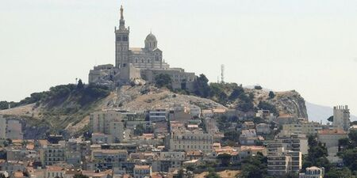
L’histoire de Marseille est si riche, que vous pourrez en voir certains vestiges lors de vos balades. En effet, les différentes périodes ont laissé des traces dans la ville. Vous pourrez ainsi visiter le fort Saint-Jean ou encore les vestiges archéologiques du Port Antique.
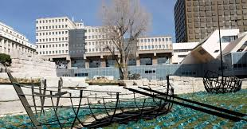
Marseille jouit d’un emplacement idéal dans le sud de la France.
Mais ce qui rend cette ville si particulière, c’est son histoire et sa culture bien reconnaissable.
Une histoire vieille de 27 000 ans
La cité phocéenne est certainement l’une des villes les plus métissées de France.
Sa situation ouverte sur la mer Méditerranée a permis au fil des siècles des échanges multiculturels qui fondent aujourd’hui l’identité de la ville.
Les prémices de la naissance de Marseille remontent à la préhistoire (27 000 ans avant notre ère), comme en témoigne la découverte de peintures rupestres dans la grotte Cosquer.
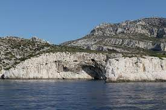
Ce passé est encore mal connu, contrairement à la période grecque de la ville (alors nommée Massalia), la plus connue de l’histoire de Marseille. En effet, elle vit le jour avec l’implantation vers 600 av. J.-C. des Phocéens, peuple nomade des mers.
Cité indépendante et prospère grâce à son port commercial, elle est envahie par les Romains en 49 av. J.-C. Durant la période romaine, la ville s’agrandit et se dote de tous les équipements de l’époque (théâtre, thermes…). Le rattachement au royaume des Francs et le début de l’ère médiévale sont surtout marqués par l’importance de l’engagement de la ville dans les croisades, en témoigne par exemple le Fort Saint Jean.
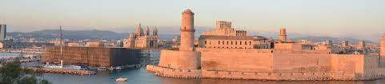
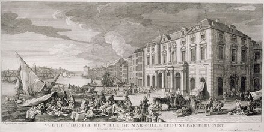
Mais Marseille peine à se maintenir. Elle est régulièrement pillée, à la fois par les Francs qui conquièrent la Provence dans les années 740 et plus tard par des pirates : des Sarrasins établis en Sardaigne et sur le littoral provençal, des Grecs, et même des Normands. Comme si ça ne suffisait pas, la ville connaît également plusieurs épidémies de peste (notamment en 643 et en 689).
Cette situation difficile se traduit par un très net repli urbain : la population baisse rapidement. Faute de bras pour l’entretenir, le front de mer s’envase et s’ensable, ce qui pénalise l’économie. Comme de nombreuses villes en Occident, dont Rome, la Marseille du Haut Moyen Age flotte dans de trop vastes remparts antiques: pour vous donner une idée, le quartier de la bibliothèque de l’Alcazar, aujourd’hui en plein centre-ville, est alors un gros domaine agricole.
La population se replie autour de noyaux fortifiés, en l’occurrence une petite forteresse sur le Mont Babon, construite grâce au réemploi des pierres du théâtre antique. C’est un signe fort: du théâtre romain au château médiéval, Marseille entre véritablement dans le Moyen-Age.
Quand il y avait deux Marseille
Dans les troubles qui suivent l’effondrement de l’empire carolingien, Marseille connaît une histoire mouvementée, entre l’Italie, la Provence et la Bourgogne. Vers 950 émerge une grande famille d’aristocrates qui obtiennent la charge de vicomtes de Marseille. Pendant plus d’un siècle, c’est cette famille qui contrôle le poste de vicomte et d’évêque de Marseille. Mais, à partir de 1070, c’est le temps de la réforme grégorienne : auparavant, les évêques étaient soumis aux familles comtales. Mais, sous l’impulsion du pape, les épiscopats se détachent des familles aristocratiques. À Marseille, c’est peut-être l’évêque Pons qui, dès 1060, divise la ville entre la partie de l’évêque et la partie des vicomtes. C’est surtout son successeur, Raymond « de Vie éternelle », qui se bat contre les vicomtes pour affirmer l’indépendance de l’Eglise de Marseille et son contrôle sur toute la partie nord de la ville. Dès 1151, les sources mentionnent couramment « la partie épiscopale de Marseille » et en 1152 « la cité de l’évêque ». La lutte entre les pouvoirs est violente : Raymond est emprisonné deux fois par les vicomtes, qui sont plusieurs fois excommuniés.
Quatre, trois, deux, une Marseille
L’évêque veut clairement donner une unité à cette ville : le rempart, obtenu en 1165, est un signe fort. En réalité, on comprend bien que « la ville » désigne moins un ensemble architectural que des droits très concrets. La ville de l’évêque, c’est la partie de Marseille dans laquelle c’est l’évêque qui rend la justice, qui punit les criminels, qui touche les amendes. Les villes médiévales sont ainsi des mosaïques complexes de droits éparpillés et d’autorités fragmentées. Le plaid d’Aix entérine ainsi la division de la ville en deux, et même en trois car la ville de l’évêque est elle-même divisée avec la ville du prévôt, le chef des chanoines. Et même quatre : toute la rive sud est contrôlée par l’abbaye de Saint-Victor, un établissement riche et puissant placé sous la tutelle directe du pape (autrement dit qui n’obéit pas à l’évêque). Au XIIe siècle, on a donc quatre seigneurs, qui gouvernent chacun leur partie et rivalisent les uns avec les autres pour défendre leurs droits. Les vicomtes sont les plus ambitieux. Dans ces partages successifs de l’espace urbain, ils ont pris soin de garder le port, en pleine expansion à mesure que se développe le commerce méditerranéen. Grâce aux croisades, des marchands de Marseille s’installent en Orient et en ramènent des denrées précieuses qui viennent enrichir les vicomtes. Ceux-ci contrôlent également la porte principale, donc la grande route qui mène vers Aubagne et l’Italie, et donc les très rentables péages. Les vicomtes s’appuient alors sur les chanoines (ce qu’on appelle le chapitre cathédral) pour affaiblir peu à peu l’évêque : en 1117, par exemple, Raymond de Vie éternelle se heurte à son chapitre, dont le prévôt est alors Aicard, fils du vicomte. Petit à petit, les vicomtes réussissent à ré imposer leur autorité. Mais les temps changent : au début du XIIIe siècle, on proclame une commune de Marseille. Le dernier vicomte se retire en 1211 et n’est pas remplacé. Huit ans plus tard, l’élite de la ville élit un conseil d’édiles nommé l’Universitas, un nom qui dit bien sa volonté de représenter toute la ville : universitas, ça veut dire ensemble, communauté, totalité. Dès 1220, la ville se dote d’un podestat, d’une bannière, d’un grand palais communal, et s’affirme comme une petite Cité-État indépendante, contre le comte de Provence et contre l’évêque de Marseille.
Marseille devient Française
Histoire tortueuse mais exemplaire, qui va d’une division des pouvoirs urbains à une réunification de la ville autour d’un idéal d’autogouvernement. Avant une nouvelle étape, décisive: en 1252, Charles d’Anjou, frère de saint Louis, assiège Marseille et s’y impose comme seigneur, mettant fin à l’autonomie politique de la commune. En 1343, la reine Jeanne de Naples, comtesse de Provence, réunifie définitivement la ville haute et la ville basse, détruisant symboliquement le Château Babon. À cette date-là, il n’y a plus qu’une seule Marseille… Même s’il faut encore attendre plus d’un siècle et demi pour qu’elle devienne française.
La ville de Marseille, entre mer et montagnes
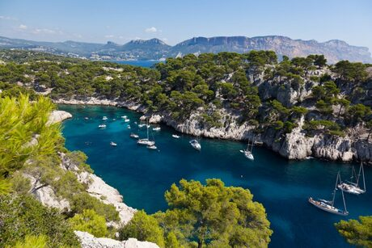
Marseille bénéficie d’une situation géographique privilégiée, au Sud-Est de la France et au bord de la Mer Méditerranée. La construction de la ville et son expansion se sont heurtées à des barrières naturelles, qui ont dicté la forme actuelle particulière de son territoire. Entre mer et montagne, Marseille s’étend en effet sur plus de 21 km d’Est en Ouest et 14 km du Nord au Sud.
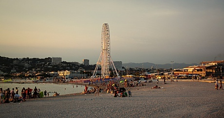
Mais ces obstacles sont aussi des atouts touristiques de premier plan, comme en témoigne l’attrait que constituent le massif des Calanques ou le quartier de l’Estaque, appelé aussi la Côte Bleue.
Marseille est une ville profondément ouverte sur la mer. Ainsi, son port est l’un des principaux d’Europe. De même, ses plages constituent la fierté des Marseillais et sont prises d’assaut au premier rayon de soleil, en particulier celle du Prado. La cité phocéenne jouit de la bienveillance du climat méditerranéen à l’ensoleillement exceptionnel. Grâce au célèbre mistral, les nuages sont balayés pour le plus grand bonheur de ses habitants.
La culture Marseillaise, un véritable art de vivre !
L’histoire de Marseille, c’est aussi la préservation d’une culture unique, teintée d’accent chantant et de bonne chère.
La langue
Au-delà du provençal, nombre de mots et d’expressions ne sont utilisés qu’à Marseille et surtout prononcés avec un accent que l’on reconnaît entre tous. Ne soyez pas surpris si vous ne comprenez pas tout ce qui se dit autour de vous… bien au contraire, demandez plus d’explications, les marseillais sont chaleureux et toujours ravis de vous aider !
Le Vieux-Port, temple de la gastronomie marseillaise
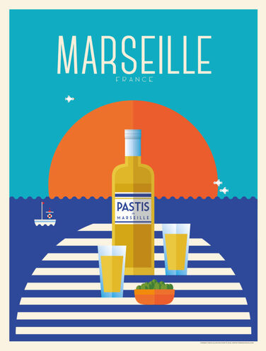
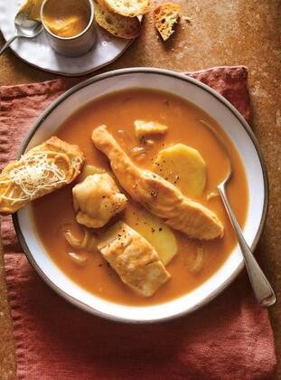
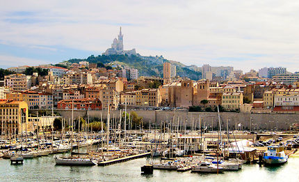
Le Vieux-Port est un lieu incontournable de la cité phocéenne. On s’y rend pour flâner et acheter du poisson au très animé marché à la criée. Ce poisson frais est ensuite utilisé dans la préparation de l’une des spécialités gastronomiques locales : la bouillabaisse. L’aïoli, le pastis et les navettes sont d’autres spécialités qu’il est vivement recommandé de découvrir à la terrasse d’un des restaurants du Vieux-Port. C’est un bel endroit où sortir le soir ou très tôt le matin !
L'Artisanat Marseillais
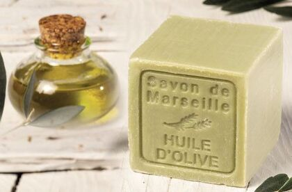
D’autres spécialités locales issues de l’artisanat constituent de bonnes idées de souvenirs, comme le savon de Marseille. Les santons sont aussi une autre tradition toujours vivace. Ces petites figurines en terre cuite cristallisent la Provence éternelle. Elles sont utilisées par les marseillais pendant la période de Noël, pour fabriquer les crèches traditionnelles.
Le football
Enfin, on ne peut faire l’impasse sur l’équipe de foot préférée des marseillais : l’OM. L’Olympique de Marseille est présent dans chaque famille et ne vous étonnez pas de vous retrouver seul dans les rues un soir de match. Profitez-en plutôt pour rejoindre le stade Vélodrome ou vous rendre dans n’importe quel bar qui diffuse la rencontre. L’ambiance y est explosive et idéale pour engager la conversation.